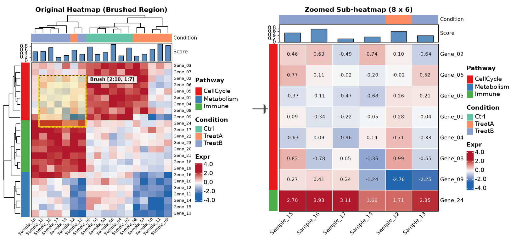

9 Interactive ComplexHeatmap#
In R, interactive exploration of heatmaps—clicking cells, brushing
sub-regions, and zooming into sub-heatmaps in a Shiny web app—is
provided by the companion InteractiveComplexHeatmap
package. In Python, ComplexHeatmap-py pairs rich inline
rendering in Jupyter/IPython notebooks with deterministic
post-clustering coordinate and index extraction
(row_order(), column_order(), and
ht[r_sel, c_sel]), giving you a straightforward,
reproducible brush-and-zoom workflow directly in Python.
9.1 Inline rendering in Jupyter and IPython#
Every major displayable object in
ComplexHeatmap-py—including Heatmap,
HeatmapList, HeatmapAnnotation,
SingleAnnotation, AnnotationFunction, and
Legends (returned by Legend() and
packLegend())—implements IPython’s
_repr_png_() protocol. Returning any of these objects as
the final expression of a Jupyter notebook cell automatically renders a
crisp PNG preview inline:
import complexheatmap as ch
import numpy as np
import pandas as pd
rng = np.random.default_rng(1)
mat = pd.DataFrame(
rng.standard_normal((12, 8)),
index=[f"Gene_{i + 1}" for i in range(12)],
columns=[f"Sample_{j + 1}" for j in range(8)],
)
# Evaluates `_repr_png_()` automatically at the end of a notebook cell
ch.Heatmap(mat, name="Expr")When executing inside a Python script, inside a for
loop, or when combining multiple statements in a cell, call
ch.draw(ht) (or ht.draw(save="out.png"))
explicitly, just as described in A
Single Heatmap and A List of
Heatmaps.
9.2 Programmatic brush selection and sub-heatmap zoom#
Interactive heatmap brushing follows four deterministic steps:
- Draw (or prepare) the full heatmap to compute hierarchical clustering, k-means splits, and layout geometry.
- Extract the display order using
ch.row_order(res)andch.column_order(res)(0-based indices ordered top-to-bottom and left-to-right on screen). - Select a rectangular display window
(
r_sel = r_ord[r0:r1],c_sel = c_ord[c0:c1]) and inspect the exact cell values and labels viadf.iloc[r_sel, c_sel]. - Slice the un-drawn
Heatmapobject withht[r_sel, c_sel](or build a zoomed view withcell_funvalue labels) and highlight the brushed rectangle on the original heatmap withch.decorate_heatmap_body().
Important:
Heatmap.__getitem__()(ht[r_sel, c_sel]) requiresht.layout["initialized"] == False. Callingres = ch.draw(ht, show=False)prepares and draws a deep copy ofhtinside the returnedHeatmapList, leaving the originalhtun-initialized and ready to slice! Note also that in the currentComplexHeatmap-pyrelease,ht[r_sel, c_sel]expects row and column names to be enabled (show_row_names=True,show_column_names=True); if names are hidden on a large matrix, slicedf.iloc[r_sel, c_sel]and the annotations (top_ha[c_sel, :],left_ha[r_sel, :]) directly.
col_fun = ch.colorRamp2([-2.5, 0.0, 2.5], ["#2166AC", "#F7F7F7", "#B2182B"])
top_ha = ch.HeatmapAnnotation(
Condition=col_meta["Condition"].tolist(),
Score=ch.anno_barplot(
col_meta["Score"].to_numpy(),
gp=ch.gpar(fill="#5B8DBE"),
height=ch.unit(10, "mm"),
),
col={"Condition": {"Ctrl": "#66C2A5", "TreatA": "#FC8D62", "TreatB": "#8DA0CB"}},
)
left_ha = ch.rowAnnotation(
Pathway=row_meta["Pathway"].tolist(),
col={"Pathway": {"CellCycle": "#E41A1C", "Metabolism": "#377EB8", "Immune": "#4DAF4A"}},
show_annotation_name=False,
)
ht = ch.Heatmap(
df,
name="Expr",
col=col_fun,
top_annotation=top_ha,
left_annotation=left_ha,
row_names_gp=ch.gpar(fontsize=6.5),
column_names_gp=ch.gpar(fontsize=6.5),
column_names_rot=45,
column_title="Original Heatmap (Brushed Region)",
border=True,
)
# 1-2. Draw copy offscreen and extract 0-based display order
res = ch.draw(ht, show=False)
r_ord = ch.row_order(res)
c_ord = ch.column_order(res)
# 3. Brush display rows [2:10] and display columns [1:7]
r0, r1 = 2, 10
c0, c1 = 1, 7
r_sel = r_ord[r0:r1]
c_sel = c_ord[c0:c1]
print("Brushed matrix shape:", df.iloc[r_sel, c_sel].shape)
print(df.iloc[r_sel, c_sel].round(2).iloc[:4, :4])Brushed matrix shape: (8, 6)
Sample_15 Sample_16 Sample_17 Sample_14
Gene_02 0.46 0.63 -0.49 0.74
Gene_06 0.77 0.11 -0.02 -0.20
Gene_05 -0.37 -0.11 -0.47 -0.68
Gene_01 0.09 -0.34 -0.22 -0.05Inside ch.decorate_heatmap_body("Expr"), the native
coordinate system spans x in [0, nc]
left-to-right and y in [0, nr] bottom-to-top.
Thus display rows r0:r1 and columns c0:c1 map
cleanly to x_center = 0.5 * (c0 + c1) and
y_center = nr - 0.5 * (r0 + r1) (see Heatmap Decoration).
Capturing both the decorated original heatmap and the zoomed
sub-heatmap via ch.grid_grabExpr() and drawing them into
side-by-side ch.viewport() panels produces a complete
overview-plus-detail view:
ht_sub = ht[r_sel, c_sel]
sub_df = df.iloc[r_sel, c_sel]
def _cell_fun(j, i, x, y, w, h, fill):
val = float(sub_df.iloc[i, j])
txt_col = "white" if abs(val) > 1.4 else "#222222"
ch.grid_text(f"{val:.2f}", x, y, gp=ch.gpar(fontsize=7.5, col=txt_col))
ht_zoom = ch.Heatmap(
sub_df,
name="ZoomExpr",
col=col_fun,
top_annotation=ht_sub.top_annotation,
left_annotation=ht_sub.left_annotation,
cluster_rows=False,
cluster_columns=False,
row_names_gp=ch.gpar(fontsize=8.5),
column_names_gp=ch.gpar(fontsize=8.5),
column_names_rot=45,
cell_fun=_cell_fun,
rect_gp=ch.gpar(col="#FFFFFF", lwd=0.8),
border=True,
heatmap_legend_param={"title": "Expr"},
column_title=f"Zoomed Sub-heatmap ({len(r_sel)} x {len(c_sel)})",
)
nr_tot, nc_tot = df.shape
def _draw_left():
ch.draw(ht, newpage=False, merge_legends=True)
with ch.decorate_heatmap_body("Expr"):
ch.grid_rect(
x=0.5 * (c0 + c1),
y=nr_tot - 0.5 * (r0 + r1),
width=float(c1 - c0),
height=float(r1 - r0),
default_units="native",
gp=ch.gpar(fill="#FFD70030", col="#FFD700", lwd=2.6),
)
g_left = ch.grid_grabExpr(_draw_left, width_in=5.6, height_in=5.4)
g_right = ch.grid_grabExpr(lambda: ch.draw(ht_zoom, newpage=False, merge_legends=True), width_in=5.8, height_in=5.4)
9.3 Extracting and zooming into split slices#
When a heatmap is partitioned with row_km,
column_km, row_split, or
column_split, ch.row_order(res) and
ch.column_order(res) return a list of index
lists—one list per slice. You can extract any slice
(kr, kc) directly and highlight it with
ch.decorate_heatmap_body(..., row_slice=kr, column_slice=kc):
ht_split = ch.Heatmap(
df,
name="SplitExpr",
col=col_fun,
row_km=2,
column_km=2,
row_title="Row Cluster %s",
column_title="Col Cluster %s",
top_annotation=ch.HeatmapAnnotation(
Condition=col_meta["Condition"].tolist(),
col={"Condition": {"Ctrl": "#66C2A5", "TreatA": "#FC8D62", "TreatB": "#8DA0CB"}},
),
row_names_gp=ch.gpar(fontsize=6.5),
column_names_gp=ch.gpar(fontsize=6.5),
column_names_rot=45,
border=True,
)
res_sp = ch.draw(ht_split, show=False)
r_sel = ch.row_order(res_sp)[0] # 1st row slice
c_sel = ch.column_order(res_sp)[0] # 1st column slice
9.4 Interactive R Shiny ecosystem and Python notebooks#
- R / Bioconductor Shiny users: If you need a full web application with mouse-click and brush events out of the box, please check the InteractiveComplexHeatmap R package.
- Python dashboard and notebook workflows: Because
ComplexHeatmap-pyis backed by MatplotlibFigureobjects (accessible viares._device.figorch.grid_grabExpr(), see Integrate with other packages) and exposes exact 0-basedrow_order()/column_order()mappings, it integrates naturally withipywidgetssliders/dropdowns in JupyterLab or reactive callbacks in Shiny for Python to recompute and re-render zoomed sub-heatmaps on user selection.